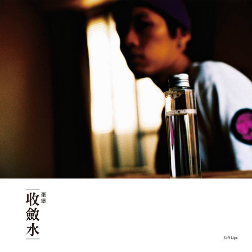

蛋堡（Soft Lipa）的音樂不走傳統饒舌的批判與攻擊路線，而是將輕柔的爵士樂（Jazz）融入嘻哈節奏。 他用如同詩人般細膩、寫實的歌詞，記錄都會生活中的日常情感。 他的音樂就像一劑生活中的「收斂水」，在輕快迷人的節奏中，撫平都市人浮躁的心靈。
收錄於 2009 年的《 winter sweet 》專輯。 蛋堡用極具畫面感的敘事手法，透過一隻泰迪熊的視角，細膩地描繪了一對男女從相識、熱戀、爭吵到分開的完整愛情故事。 這首歌沒有激烈的批判，卻用最溫柔的重擊，成為了無數人心目中中文饒舌的敘事神曲。

收錄於 2009 年同名專輯《收斂水》。 簡單迷人的爵士鋼琴採樣，配上蛋堡不疾不徐的溫柔輕饒舌，這首歌沒有嘻哈音樂常見的憤世嫉俗，取而代之的是如清晨微風般的舒適感。 蛋堡用文字與節奏，成功為浮躁的都市心靈調配出一劑最具療癒感的「收斂水」。
榮獲第 32 屆金曲獎「最佳國語專輯獎」的里程碑之作。 蛋堡重回獨立製作，將音樂的主題徹底回歸家庭、日常與初為人父的體悟。 沒有華麗的包裝，他用最純粹的採樣與生活隨筆，證明了嘻哈音樂最無可替代的「真實」價值，那就是最真摯的家常生活。
「I want you! I want you! I want you!
I want you! I want you girl!」
—《I want you》
「結果是風景，過程是明信片。」
—《過程》